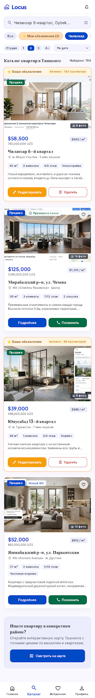
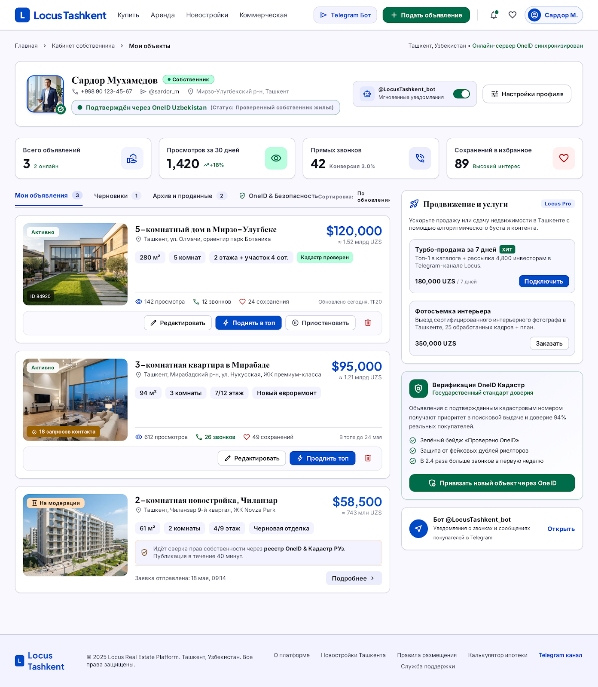
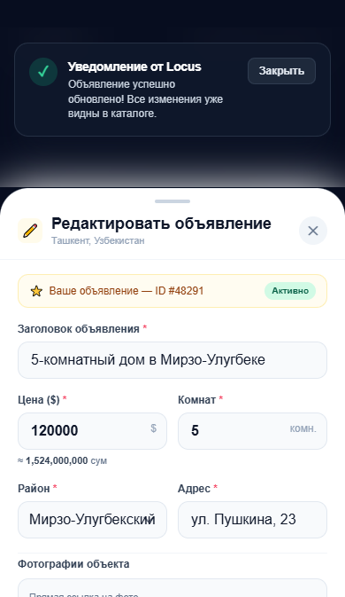
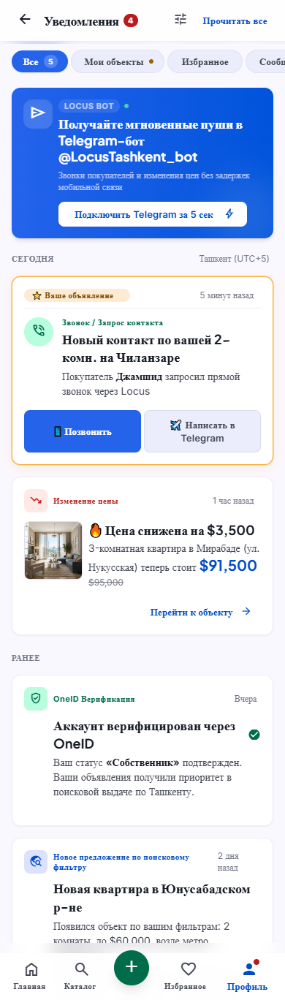
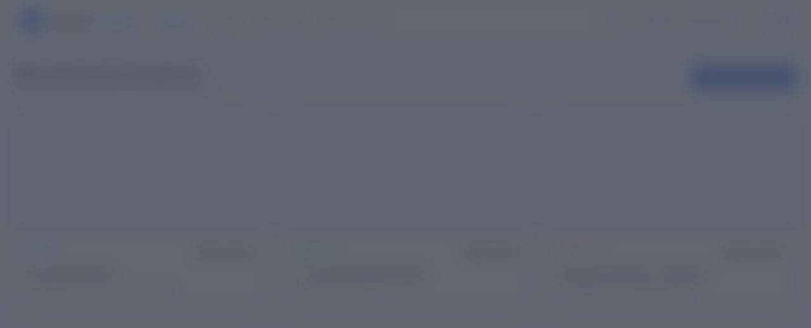
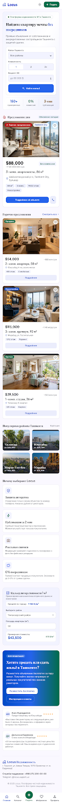
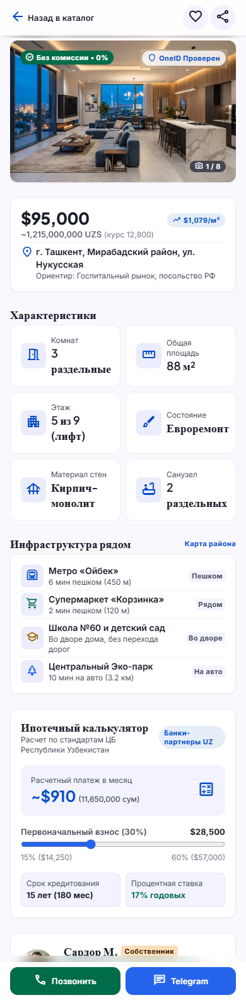
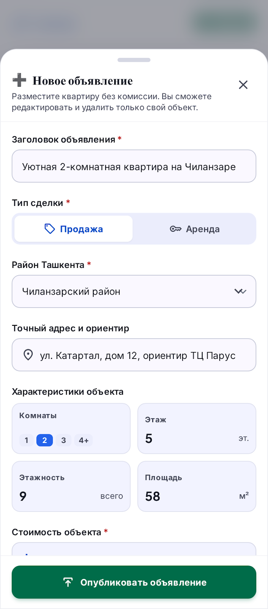
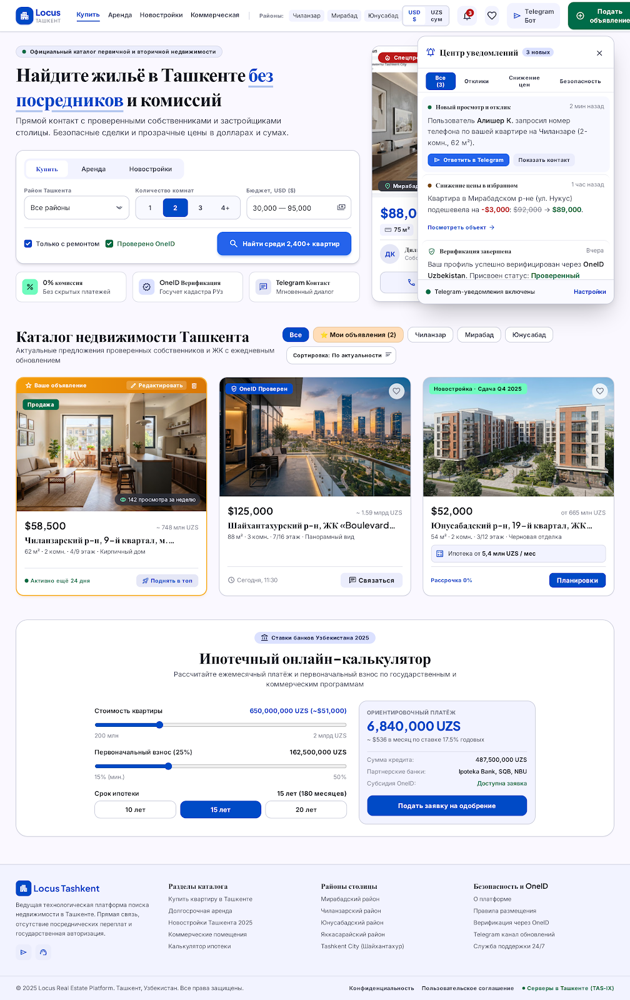
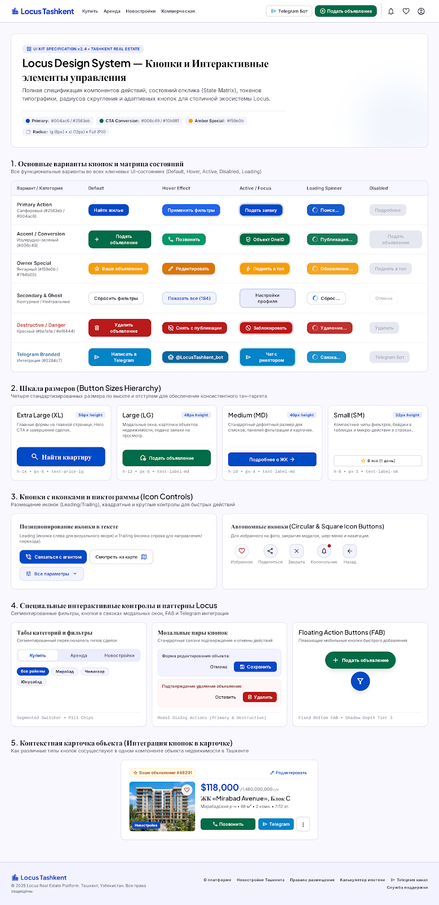

Дизайн-система и макеты экранов Locus Tashkent
Комплексный набор интерфейсов маркетплейса недвижимости: 9 готовых экранов с проработанной адаптивной сеткой Tailwind CSS, токены дизайн-системы Tashkent Modern Marketplace и компонентный UI Kit.
10 Модулей платформы Stitch

Экран 1Каталог и поиск недвижимости
Сетка объектов с быстрым фильтром по районам, комнатности и цене, переключение списком и картой Ташкента.

Экран 2Личный кабинет собственника
Панель управления объявлениями владельца (Сардор Мухамедов), статистика просмотров, OneID верификация и баланс.

Экран 3Редактирование объявления
Модальное окно редактирования объекта недвижимости: быстрая смена цены в у.е., обновление адреса и параметров.

Экран 4Уведомления и Активность
Экран центра уведомлений: входящие заявки от покупателей, изменение статуса объявлений и динамика цен.

Экран 5 ⭐Управление недвижимостью
Новый экран из архива: расширенный дашборд собственника с детальным управлением списками и модальным редактором.

Экран 6 ⭐Locus Недвижимость — Ташкент
Новый экран из архива: современная витрина «Предложение дня», подборки по Чиланзару, Мирабаду и Юнусабаду.

Экран 7 ⭐Детали объекта недвижимости
Новый экран из архива: галерея фото, бейдж 0% комиссии, проверка OneID, калькулятор ипотеки и форма связи.

Экран 8 ⭐Мастер подачи объявления
Новый экран из архива: стильное модальное окно добавления квартиры с выбором района, комнат, загрузкой фото и ценой.

Экран 9 (Флагман) ⭐Платформа Узбекистана (Комплексный)
Флагманский экран: интерактивный бар уведомлений, мультивалютный переключатель (USD/UZS), OneID и полный каталог.

UI Kit ⭐UI Kit: Кнопки и Интерактивные элементы
Библиотека компонентов: все варианты кнопок (Primary, Secondary Emerald, Ghost), чипсы фильтров, инпуты, бейджи.